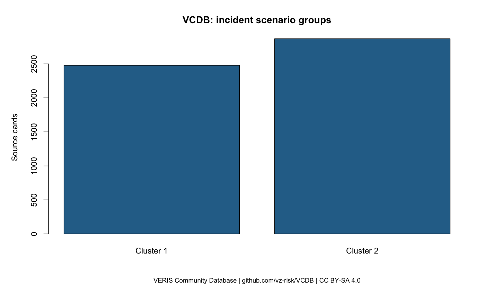
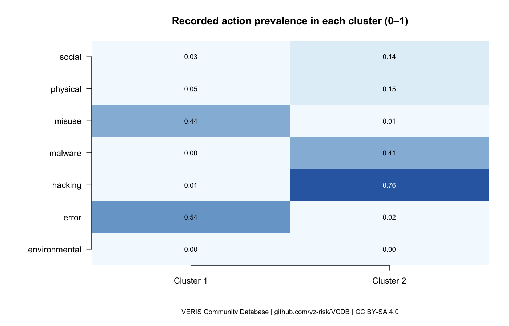
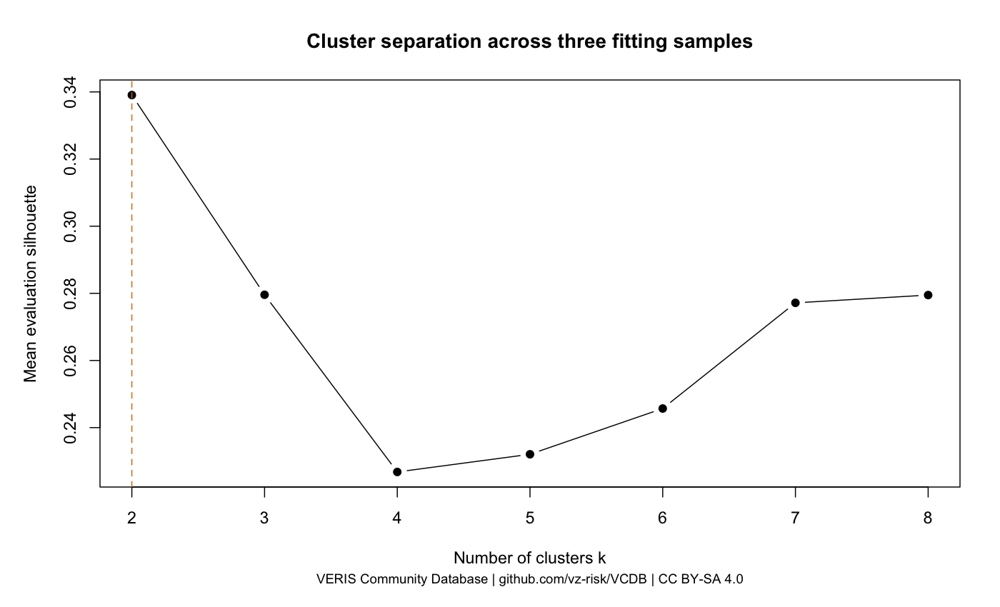

Анализ и кластеризация утечек
Группировка похожих карточек по действиям, типам участников, активам и видам раскрытых данных. Целевая переменная не требуется.
1. Размеры получившихся групп
| Группа | Карточек | Доля | Медиана записей | Размер известен |
|---|---|---|---|---|
| Группа 1 | 2 478 | 46.3% | 703 | 1 477 |
| Группа 2 | 2 869 | 53.7% | 9 000 | 1 076 |
Медианы рассчитаны только по известным значениям. Число записей не равно числу уникальных людей.

2. Чем различаются группы
| Зарегистрированное действие | Группа 1 | Группа 2 |
|---|---|---|
| Непреднамеренные ошибки | 53.8% | 2.4% |
| Злоупотребление доступом | 44.3% | 1.2% |
| Взлом | 1.4% | 76.3% |
| Вредоносные программы | 0.2% | 40.9% |
| Социальная инженерия | 3.2% | 13.7% |
| Физические действия | 4.8% | 14.8% |
| Воздействия среды | 0.0% | 0.1% |
Одна карточка может содержать несколько действий, поэтому проценты не обязаны складываться в 100%.

3. Насколько устойчив результат
Средний silhouette: 0.339. Согласованность трёх запусков, ARI: 0.868. Это показатели разделения и устойчивости, а не точность предсказания.

При исключении типа участника ARI падает до 0.178. Разделение существенно зависит от этого признака: это описательные группы, а не универсальная типология причин.
4. Ограничения и дальнейший анализ
Карточки без содержательных значений во всех четырёх семействах исключены только из кластеризации. Неизвестные данные не заменены выдуманными фактами. Отбор полных карточек смещает выборку.
Для сценариев ошибок и злоупотреблений стоит изучить права доступа, проверку получателей и контроль выгрузок. Для внешних атак — управление уязвимостями, защиту учётных записей и мониторинг. Эффективность мер нужно проверять отдельно.
Подробный отчёт · Карточки и кластеры CSV · Все профили CSV · Сравнение вариантов CSV
5. Применимость блокчейн-технологий
Для учебного анализа VCDB достаточно обычной базы, воспроизводимых преобразований и контроля версий. Наиболее обоснованный кандидат для permissioned-блокчейна — совместная регистрация версий свидетельств несколькими независимыми организациями. Переход к нему оправдывается требованиями к доверию и аудиту, а не принадлежностью инцидента кластеру. Снижение вероятности или ущерба утечек по данному исследованию не установлено.
| Критерий | База данных | Журнал и хеш-цепочка | Цифровая подпись | Permissioned-блокчейн |
|---|---|---|---|---|
| Целостность | Ограничения и транзакции поддерживают согласованность; привилегированное изменение требует отдельного контроля. | Хеш-цепочка выявляет локальную подмену при наличии независимо сохранённого доверенного контрольного хеша. | Проверяет неизменность подписанного содержимого. | Совместная проверяемая история при выполнении предпосылок консенсуса. |
| Авторство | Учётные записи приложения; достоверность атрибуции зависит от аутентификации и журналирования. | Одно хеширование не удостоверяет автора; нужны подписи или иной механизм аутентификации. | Связывает документ с ключом; личность устанавливается через доверенную привязку ключа. | Идентификаторы участников и подписи транзакций; требуется управление удостоверениями. |
| Конфиденциальность | Контроль доступа, шифрование и минимизация хранимых полей. | Содержимое журнала отдельно защищают от чтения; хеширование не является шифрованием. | Сама подпись не скрывает содержимое. | Ограничение доступа, каналы и private collections; распределение копий требует осторожности. |
| Модель доверия | Доверие одному оператору и его администраторам. | Нужен независимый получатель контрольных хешей или защищённый архив. | Доверие удостоверению ключей, защите ключей и процедурам отзыва. | Несколько организаций с согласованными правилами управления и достаточной независимостью узлов. |
| Стоимость эксплуатации | Для одного оператора обычно простейший исходный вариант; цену нужно измерять. | Дополнительное хранение, доставка контрольных хешей и регулярная проверка. | Управление ключами и проверка подписей. | Эксплуатация нескольких узлов и совместное управление; майнинг не обязателен. |
| Основные ограничения | Без независимого аудита привилегированная подмена может остаться незамеченной. | Владелец всей цепочки может переписать её и пересчитать хеши, если внешнего доверенного якоря нет. | Не удостоверяет истинность текста и не предотвращает подписание ложных данных с действительным ключом. | Не доказывает правдивость ввода и не предотвращает раскрытие данных на конечных системах. |
Сравнение и сценарии ниже — инженерные выводы авторов проекта на основе указанных источников. Это не результаты причинного анализа VCDB и не доказательство предотвращения утечек.
6. Сценарии и меры защиты
| Сценарий | Задача защиты | Традиционное решение | Возможная роль блокчейна | Условия | Ограничения |
|---|---|---|---|---|---|
| Ошибка публикации или отправки данных | Предотвращать ошибочное раскрытие и документировать изменения настроек. | Проверки настроек, минимальные права, согласование публикации, журнал изменений. | Возможная фиксация согласований между организациями. | Есть независимые стороны и спор о последовательности согласований. | Не исправляет настройки и не блокирует отправку данных сам по себе. |
| Злоупотребление привилегиями и попытка скрыть следы | Сохранить проверяемую историю действий. | Разделение полномочий, удалённый сбор журналов, защищённый архив и подписанные контрольные хеши. | Совместный журнал подтверждений, если несколько организаций должны контролировать историю. | Узлы и ключи не подконтрольны одному нарушителю; события действительно отправляются в журнал. | Пропущенное до регистрации событие не восстанавливается; сговор и компрометация ключей остаются рисками. |
| Внешнее проникновение через учётную запись или уязвимость | Защитить вход и сократить возможность несанкционированного доступа. | Сильная аутентификация, управление уязвимостями, сегментация и мониторинг доступа. | Дополнительная регистрация свидетельств расследования. | Есть отдельная потребность совместно проверять историю свидетельств. | Не заменяет защиту конечной системы и не устраняет уязвимость. |
| Вредоносное ПО и повреждение файлов | Обнаруживать изменения и восстанавливать доступность. | Контроль целостности, изолированные резервные копии, проверка восстановления и обнаружение вредоносной активности. | Регистрация контрольных хешей для независимого сопоставления версий. | Доверенная версия зарегистрирована заранее и доступна для восстановления отдельно. | Хеш не содержит резервной копии и не восстанавливает уничтоженный файл. |
| Совместное ведение карточек инцидентов несколькими организациями | Сверять версии карточек и сохранять историю согласований. | Версионируемая БД, подписанные выгрузки и независимый архив. | Реестр идентификаторов, версий и хешей с согласованной политикой подтверждения. | Несколько независимых владельцев записей; единый оператор не принимается участниками. | Исходные карточки хранятся отдельно; реестр не проверяет истинность описания, а низкоэнтропийные поля нельзя считать скрытыми одним хешем. |
7. Учебная проверка целостности
Проведён эксперимент на синтетическом журнале SHA-256. Независимая контрольная отметка моделируется отдельным файлом. Сеть, консенсус и цифровые подписи не реализованы.
| Сценарий | Цепочка согласована | Контрольная отметка совпала | Журнал принят |
|---|---|---|---|
| Неизменный журнал | да | да | да |
| Подмена без пересчёта | нет | да | нет |
| Подмена с полным пересчётом | да | нет | нет |
| Удаление последней записи | да | нет | нет |
Полный пересчёт позволяет подменённому журналу пройти внутреннюю проверку. Независимая доверенная отметка выявляет такую подмену. Если нарушитель заменит и её, гарантия исчезает. Эксперимент не измеряет предотвращение утечек.
8. Материалы для защиты
Отчёт DOCX · Презентация PPTX · Вопросы для защиты
Источники
- NIST IR 8202 — Blockchain Technology Overview (2018)
- NIST FIPS 186-5 — Digital Signature Standard (2023)
- NIST SP 800-92 — Guide to Computer Security Log Management (2006)
- Hyperledger Fabric — Introduction
- Hyperledger Fabric — Private data
Технические источники проверены 6 октября 2026 года. Данные VCDB зафиксированы отдельным снимком от 30 сентября 2026 года.